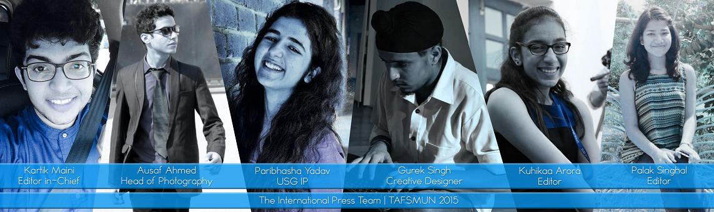

It is very important that the current and the past problems of the world are discussed and deliberated upon. For that, we have the committees and cabinets with world leaders discussing such issues. However, it is equally important that the world outside these committees gets to know about what is being discussed inside as any decision taken in the committees would greatly affect their lives and their culture. This is done with the help of the press, which can even help people voice their opinion and get the world leaders to recognise them. This spread of information to the masses in an accurate and reliable form is what the International Press at TAFSMUN 2015 aims for. So pick up your pens and your cameras; because it’s time the world wakes up.
